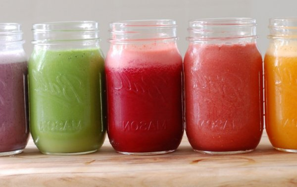

Полезные ягодные смузи

Завтрак - самая важная еда дня ... Говорят, что мамы так учат. Моя тот момент пропустила :) Хоть и дед любил по-баварски накрыть стол свежими булками и выбором колбас и сыра так, чтобы стол гнулся. Все мы в основном обходились бутербродами. Это не в укор. Маме на утро было достаточно кофе для начала. У меня что-то тоже очень аппетита не было и всегда удивлялся, как можно есть большие порции калорийных блюд на завтрак? Врачи утверждают, что это личное дело, и на силу, конечно, лучше не есть.
Может, лучше выпить что-то, типа полосе? Однако, совсем без завтрака выходить из дома точно не нужно, а это дело дисциплины. Кофе на пустой желудок, которую мы пьем быстро, пока ищем носки и бежим на работу, до добра не доведет. Лучше проснуться раньше и спокойно, полезно начать свой день (не глядите глупые сериалы до поздней ночи, то проснуться будет легче)). Если с вопросом самоорганизации я Вам не помогу, то с идеями вкусный завтрак вас продержат до обеда, проблем нету. Главное, правильная комбинация витаминов и других полезных веществ, которые сделают блюда питательными, но при этом не будет тяжести в желудке.
Надеюсь, это будет мотивацией для начала здорового образа жизни. На всякий случай, я добавил здесь также идеи для завтрака, который можно взять с собой ... Есть только одна просьба: если Вы живете не одни, то не забывайте, что Ваша половинка не сильно радуется, если Вы ее шумом вытащите из кровати и оставите на кухне армагеддон, прежде чем убежать на работу. Поверьте слова "солнце, я приготовил завтрак" Вас не спасут;)
Если не привыкли завтракать утром, полосе - хороший вариант. Он не только легкий для желудка и быстро готовится, но и полный витаминов, которые пригодятся в течение дня. Его также удобно пить по дороге на работу / учебу. Берите этот рецепт как основу и меняйте ягодки на свой вкус другими фруктами ... Что надо на 1 л. воды.
Может, лучше выпить что-то, типа полосе? Однако, совсем без завтрака выходить из дома точно не нужно, а это дело дисциплины. Кофе на пустой желудок, которую мы пьем быстро, пока ищем носки и бежим на работу, до добра не доведет. Лучше проснуться раньше и спокойно, полезно начать свой день (не глядите глупые сериалы до поздней ночи, то проснуться будет легче)). Если с вопросом самоорганизации я Вам не помогу, то с идеями вкусный завтрак вас продержат до обеда, проблем нету. Главное, правильная комбинация витаминов и других полезных веществ, которые сделают блюда питательными, но при этом не будет тяжести в желудке.
Надеюсь, это будет мотивацией для начала здорового образа жизни. На всякий случай, я добавил здесь также идеи для завтрака, который можно взять с собой ... Есть только одна просьба: если Вы живете не одни, то не забывайте, что Ваша половинка не сильно радуется, если Вы ее шумом вытащите из кровати и оставите на кухне армагеддон, прежде чем убежать на работу. Поверьте слова "солнце, я приготовил завтрак" Вас не спасут;)
Если не привыкли завтракать утром, полосе - хороший вариант. Он не только легкий для желудка и быстро готовится, но и полный витаминов, которые пригодятся в течение дня. Его также удобно пить по дороге на работу / учебу. Берите этот рецепт как основу и меняйте ягодки на свой вкус другими фруктами ... Что надо на 1 л. воды.
Ингридиенты (На 6 чел.)
свежий сок трех апельсинов
нейтрального (греческого) йогурта (10% жира), Альтернатива - "Активиа 300 г
сиропа агавы (в магазинах здоровой пищи, например, " из Деревни »), Альтернативно - нежный мед 4 ст. л.
смешанных свежих или замороженных ягод на вкус. 300 г
Все взбить в блендере (ок. 2-3 минут) до однородной массы без комочков.
Хотя и сохраняется в холодильнике не менее дня, полосе желательно пить свеженьким.
3-06-2017, 14:46 / Комментарии (0)
0
(0 гол.)